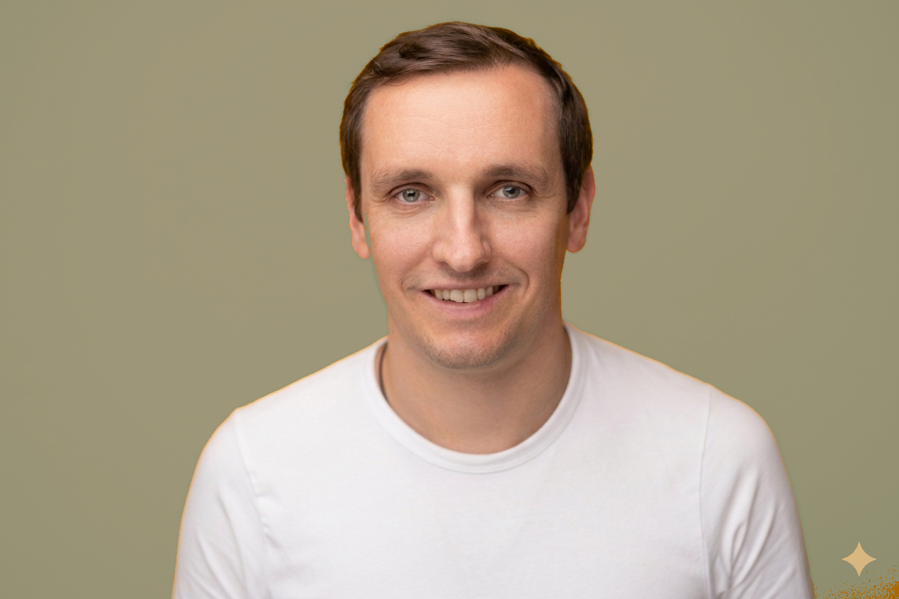

Alte Muster
Situationen, Reaktionen oder Beziehungsthemen, die sich scheinbar wiederholen.
Aurachirurgie in Dresden & online
Manche Beschwerden, Gefühle oder Muster begleiten uns, obwohl wir längst bereit sind, sie loszulassen. Mit Aurachirurgie arbeite ich berührungsfrei im energetischen Informationsfeld – ruhig, klar und individuell.
Worum es gehen kann
Wiederkehrende Themen können sich körperlich, emotional oder in bestimmten Lebenssituationen zeigen. Nicht immer ist sofort verständlich, warum etwas bleibt.
Die energetische Arbeit lädt dazu ein, den Blick zu weiten: auf gespeicherte Erfahrungen, übernommene Prägungen und Informationen, die heute nicht mehr hilfreich sind.
Situationen, Reaktionen oder Beziehungsthemen, die sich scheinbar wiederholen.
Das Gefühl, nicht ganz bei dir anzukommen oder schwer abschalten zu können.
Beschwerden, die ergänzend auf energetischer Ebene betrachtet werden dürfen.
Der Wunsch nach Klarheit, Selbstbestimmung und einem stimmigen nächsten Schritt.
Die Methode
Aurachirurgie ist eine ganzheitliche, energetische Methode. Sie geht von der Annahme aus, dass Erfahrungen und Belastungen als Informationen im feinstofflichen Feld gespeichert sein können.
Mit symbolischen Instrumenten, anatomischen Modellen und kinesiologischer Rückmeldung können solche Informationen sichtbar gemacht und neue, unterstützende Impulse gesetzt werden.
In meiner aurachirurgischen Arbeit verbinde ich die Ansätze nach Ruedi Kern, Karin Maria Hafen und Dr. Mathias Künlen.
„Veränderung beginnt nicht erst irgendwann. Sie beginnt in dem Moment, in dem du dich neu ausrichtest.“
Dein Termin
In einem kostenfreien Gespräch von etwa 15 Minuten klären wir dein Anliegen und ob meine Arbeitsweise zu dir passt.
Wir schauen gemeinsam auf dein Thema. Der kinesiologische Muskeltest kann dabei als Rückmeldesystem dienen.
Die Arbeit erfolgt berührungsfrei, mit gezielten symbolischen und informatorischen Impulsen.
Zum Abschluss besprechen wir, was sich gezeigt hat und was dich im Alltag weiter unterstützen kann.

Über mich
Seit 2016 beschäftige ich mich intensiv mit energetischen Methoden und ganzheitlichen Ansätzen.
Ich verbinde eine strukturierte Vorgehensweise mit einem ruhigen, offenen Blick auf das, was du mitbringst. Mir ist wichtig, dir auf Augenhöhe zu begegnen – ohne Bewertung, ohne Druck und ohne vorgefertigte Lösung.
Du bleibst dabei jederzeit in deiner Selbstverantwortung. Ich begleite dich dabei, Informationen und Muster sichtbar zu machen, neue Perspektiven zu öffnen und deiner eigenen Wahrnehmung wieder mehr zu vertrauen.
Mehr über meine Arbeit Energetische Begleitung bei wunderbar gesund Unverbindlich Kontakt aufnehmen →Gut zu wissen
Nach einem Vorgespräch wird dein Anliegen eingegrenzt. Die energetische Arbeit kann mit symbolischen Instrumenten, anatomischen Modellen und dem kinesiologischen Muskeltest erfolgen. Es finden keine körperlichen Eingriffe statt.
Nein. Sitzungen sind sowohl in Präsenz in Dresden als auch online möglich. Im kostenfreien Kennenlerngespräch besprechen wir, welcher Rahmen für dein Anliegen passt.
Plane für eine individuelle Sitzung ungefähr 60 bis 120 Minuten ein. Dauer und Umfang richten sich nach deinem Thema und werden vorab abgestimmt.
Nein. Aurachirurgie ist eine energetische Methode und kein Ersatz für Diagnose oder Behandlung durch Ärzte, Heilpraktiker, Psychotherapeuten oder andere medizinische Fachpersonen.
Dein nächster Schritt
Erzähl mir in ein paar Sätzen, worum es dir geht. Ich melde mich persönlich bei dir und wir vereinbaren ein kostenfreies Kennenlerngespräch.
Mehr über meine energetische Arbeit www.wunderbar-gesund.deNachricht gesendet
Vielen Dank für dein Vertrauen. Ich schaue mir dein Anliegen persönlich an und melde mich so bald wie möglich bei dir.
Zurück zum Seitenanfang